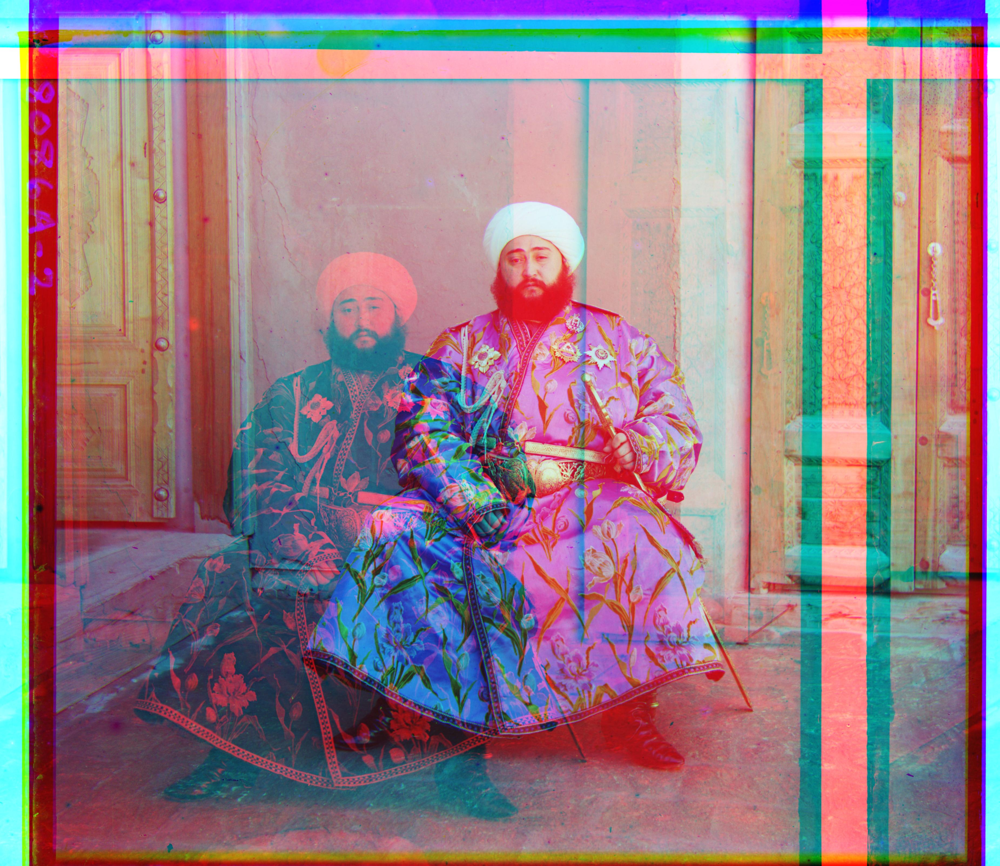
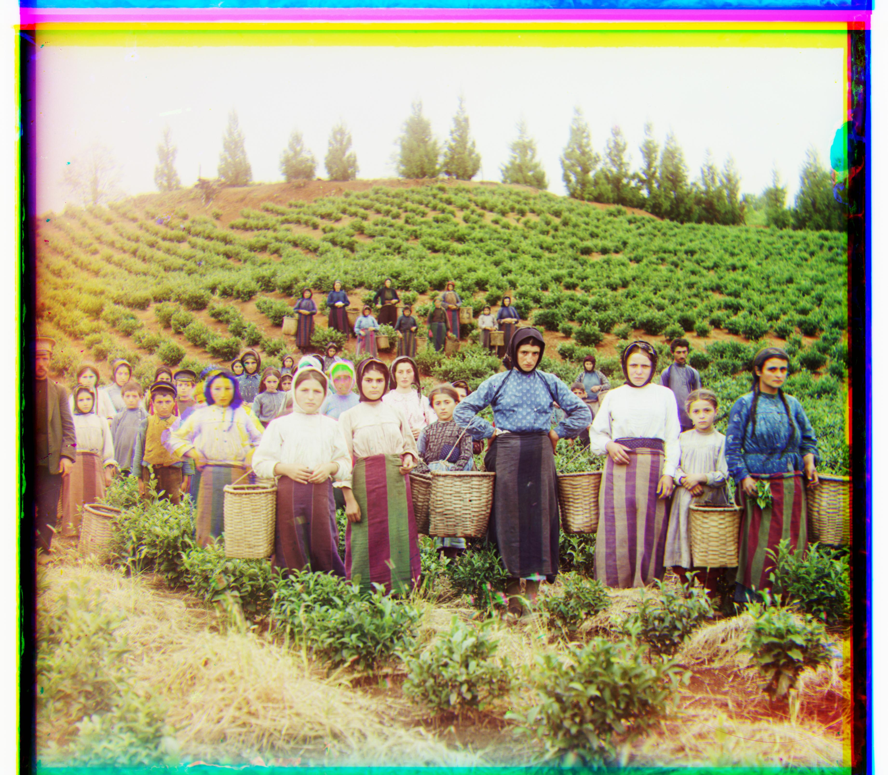
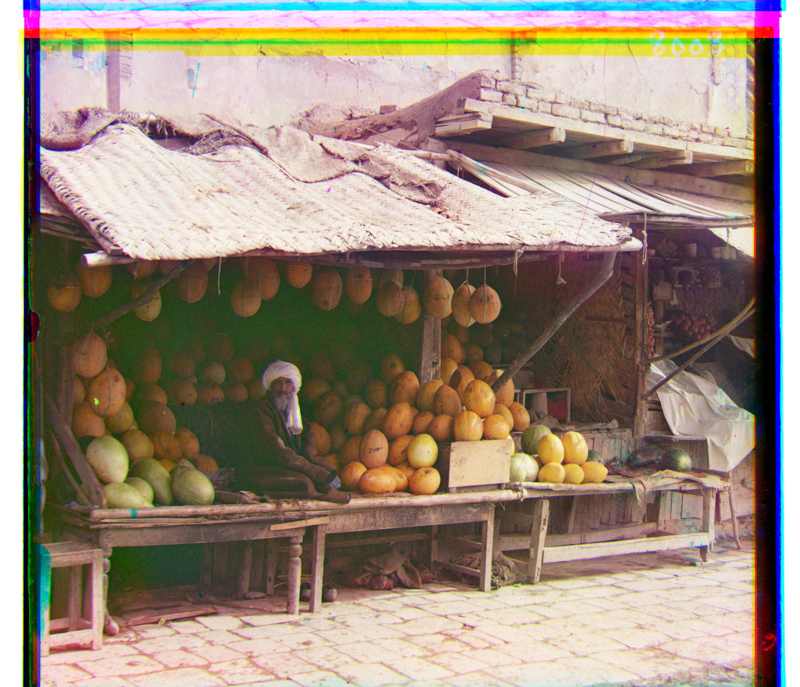
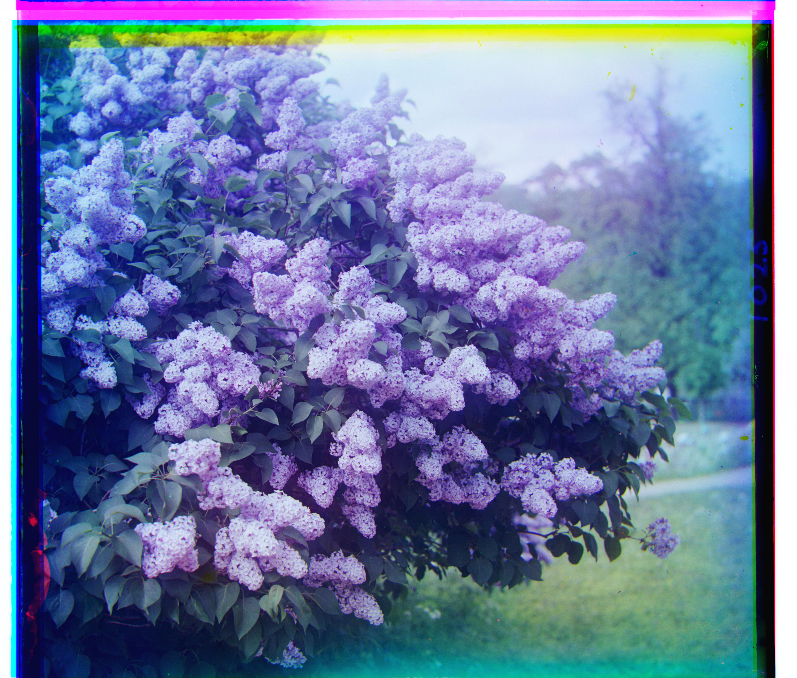
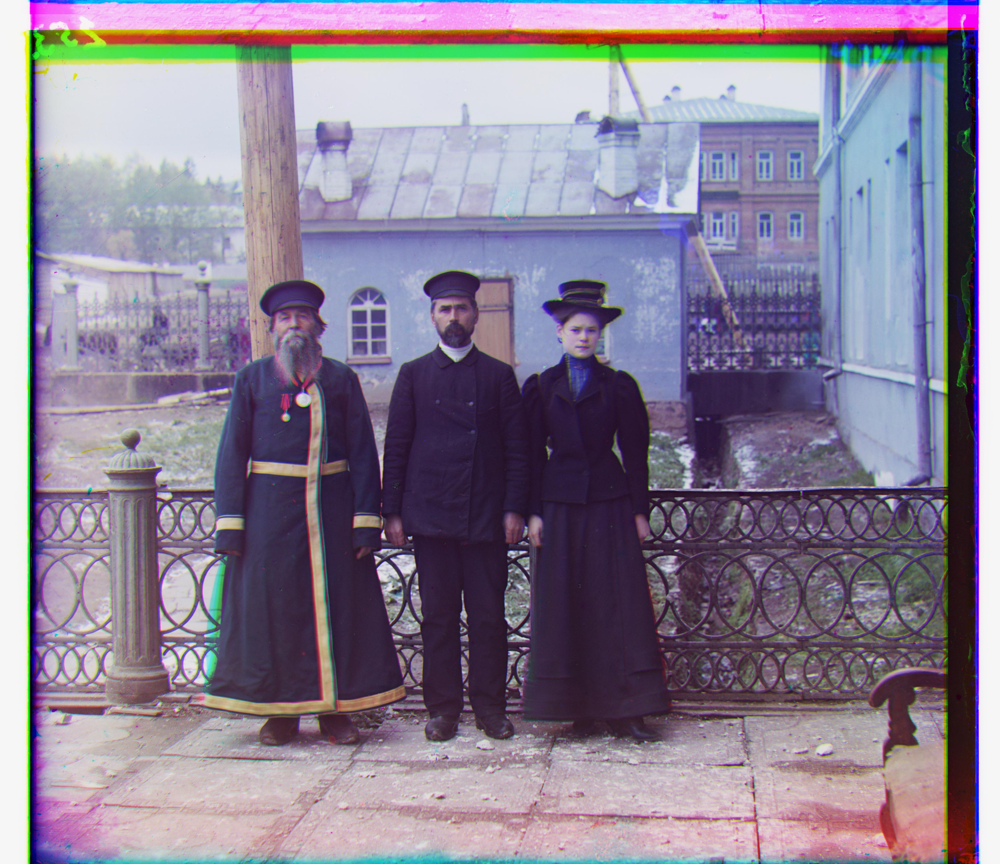
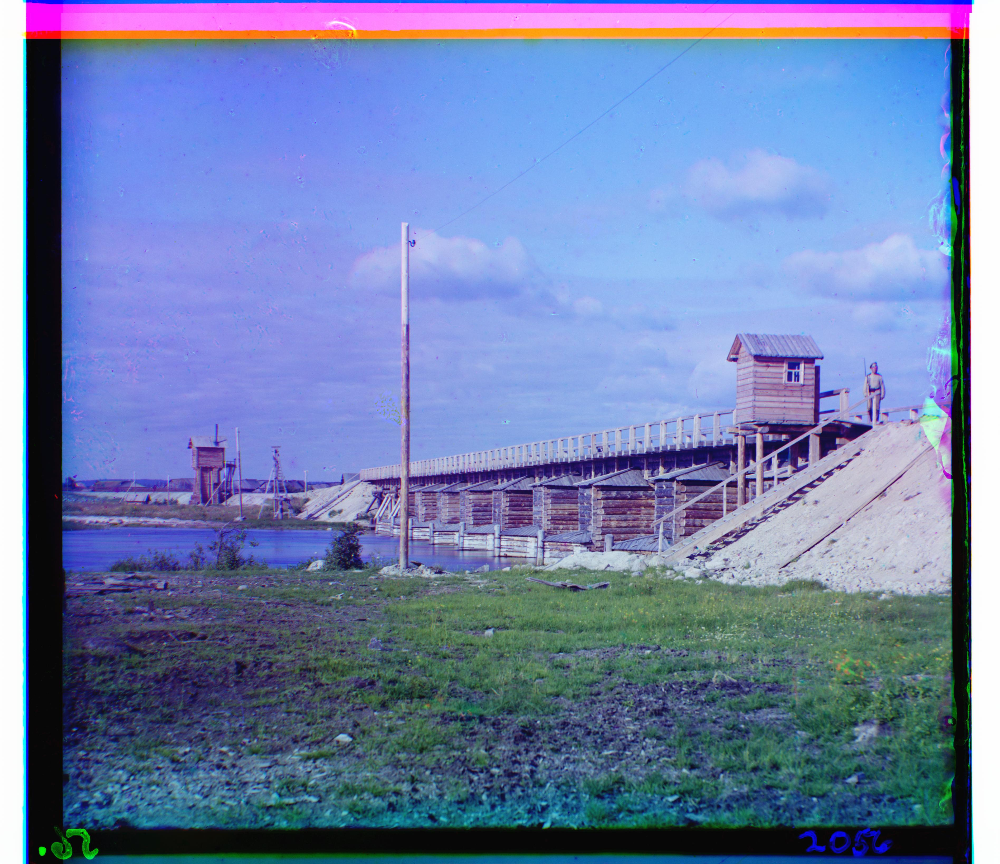
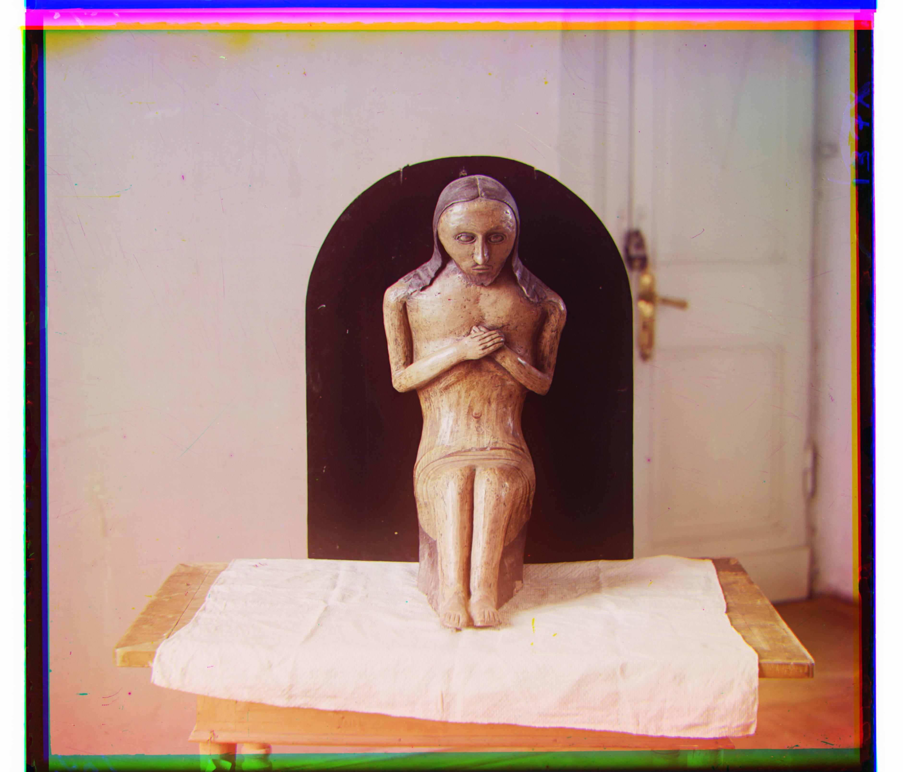
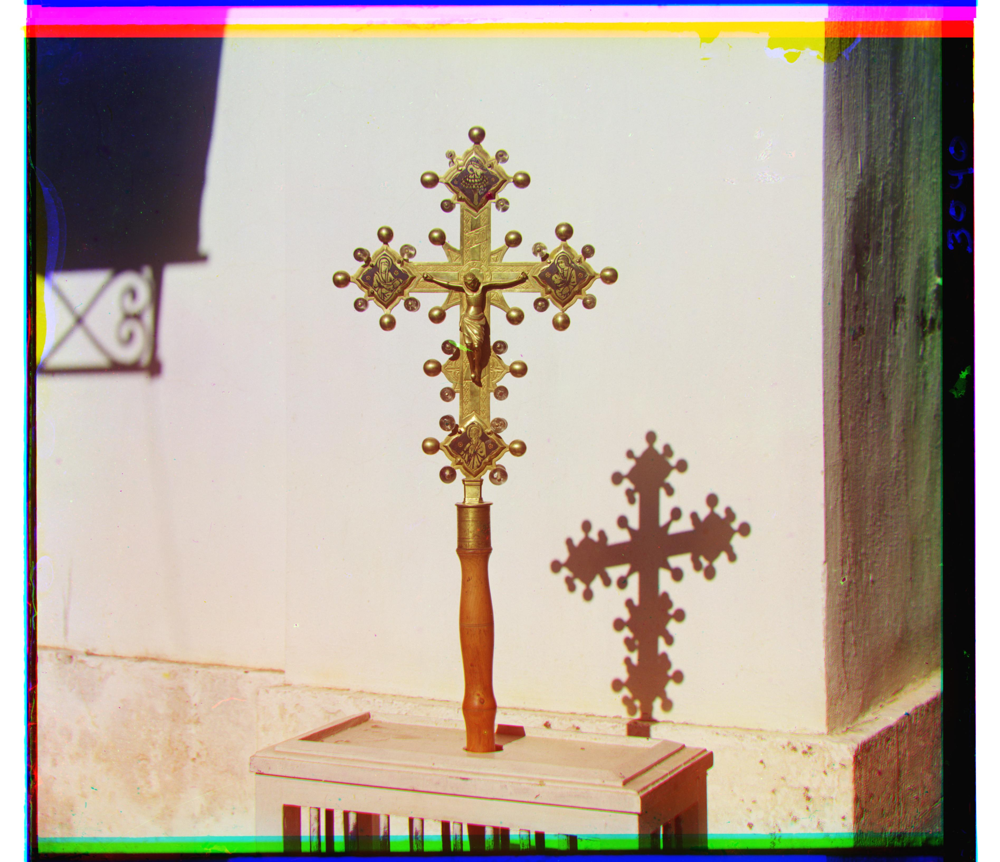
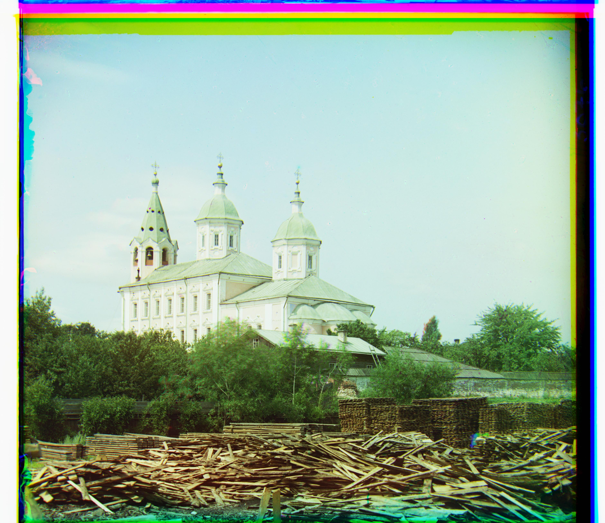

Overview
Sergey Prokudin–Gorskii photographed scenes using three sequential exposures through blue, green, and red filters. The Library of Congress scans are tall grayscale plates that stack these exposures vertically (top→bottom = B/G/R). This project reconstructs color images by splitting the plate into three channels, aligning G→B and R→B using a pure translation model, and stacking into RGB.
Float processing (0–1), valid-overlap scoring (no wrap-around), small interior crop to suppress borders, SSD/NCC metrics, and a coarse-to-fine pyramid to handle large displacements efficiently.
Single-scale Alignment
For smaller plates, I use a brute-force search over integer displacements within a fixed window (e.g., ±15 px). The score is computed only on the overlapping interior to avoid border bias. NCC generally outperforms SSD on cross-channel matches.
- Split: crop to a multiple of 3 rows, then slice B/G/R thirds.
- Search: for each (dy, dx) in the window, compute valid overlap (no wrap), then crop ~5% from each side.
- Score: SSD or NCC on the interior; pick the best (min SSD / max NCC).
- Apply: shift G and R by the winning displacements, then stack
[R, G, B].
\(L_2\) Norm
\[ \left\lVert I_1 - I_2 \right\rVert_2 = \sqrt{ \sum_{x}\sum_{y} \big( I_1(x,y) - I_2(x,y) \big)^2 } \]NCC Norm
\[ \mathrm{NCC}(I_1, I_2) = \frac{ \langle \tilde I_1, \tilde I_2 \rangle } { \left\lVert \tilde I_1 \right\rVert_2 \, \left\lVert \tilde I_2 \right\rVert_2 }, \quad \tilde I = I - \overline{I} \]| Image | Green Channel Displacement | Red Channel Displacement | Processing Time (s) |
|---|---|---|---|
 |
(−3, 2) | (3, 2) | 1.62 |
 |
(5, 2) | (12, 3) | 1.86 |
 |
(3, 3) | (6, 3) | 1.78 |
(dy, dx) with the moving channel aligned to Blue (G→B and R→B).
Pyramid-Speedup Alignment
For high-resolution plates, exhaustive search is too slow. I build a pyramid by 2×2 averaging (anti-alias) and downsample by 2 until the shortest side ≤ 100 px. Alignment proceeds coarse→fine: search a window (±10) at the coarsest level, scale the displacement by 2 when moving up a level, and refine within ±10 around the upsampled center. Scores are NCC on cropped interiors (~5%).
- Downsample: 2×2 mean (low-pass) then decimate by 2 — repeat until small.
- Coarse search: find a good shift at the smallest scale.
- Propagate & refine: double the shift per level and locally refine (±10).
- Finalize: apply the full-resolution shift to the un-cropped channel and compose RGB.
Notice that the second row of the results table, emir.tif, shows a clear misalignment, especially for red plate alignment. According to Anonymous Elephant's responding to this question: "The problem is that at smaller resolutions, you're still searching over too small an area. My idea was to search over large areas under small resolutions and scale those down with each larger image. ..." I partly revised my algorithm based on that just for this emir image alone. You can see my result in the next section. It takes a bit of more time to run the algorithm, but the final result looks pretty nice.
| Image | Green Channel Displacement | Red Channel Displacement | Processing Time (s) |
|---|---|---|---|
 | (25, 4) | (58, -4) | 13.98 |
|  | (49, 24) | (292, -578) | 12.19 |
|  | (60, 17) | (124, 14) | 13.68 |
| (41, 17) | (89, 23) | 14.65 | |
 | (38, 21) | (77, 35) | 15.02 |
 | (-3, -2) | (75, -9) | 14.38 |
 | (41, -16) | (93, -29) | 14.89 |
|  | (82, 11) | (179, 13) | 14.44 |
 | (79, 29) | (176, 37) | 14.12 |
|  | (49, -6) | (96, -25) | 14.96 |
|  | (53, 14) | (112, 11) | 14.18 |
Revised emir.tif — Robust Red-Plate Alignment
The red plate of emir.tif was difficult to align using plain pyramid + NCC. At small scales, the best shift often sat at the window’s edge and then exploded when multiplied by 2 across levels, and NCC on intensities was unstable on low-texture patches. I implemented a targeted revision that fixes both issues while remaining simple and fast.
-
Safer NCC with low-texture guard (
ncc_score_emir) — zero-mean normalize both patches and skip comparisons whose std dev is below a threshold (returns −1.0). This prevents flat sky/wall regions from “winning” randomly. -
Coarse→fine two-pass per level (
align_pyramid_simple_emir) — at the coarsest level use a large window (25% of min side, capped at 80). At each level: (a) do a gradient-NCC search around the upscaled center; then (b) refine with intensity-NCC in a smaller window. Double (dy, dx) between levels. - Interior crop on the overlap — score on the overlap’s interior (≈5%) to suppress black/white scanner borders.
| Metric | Value |
|---|---|
| Green Channel Displacement (G→B) | (49, 24) |
| Red Channel Displacement (R→B) | (103, 45) |
| Processing Time (s) | 93.59 |
Edges dominate at coarse scales and are invariant to exposure differences; the low-texture guard avoids random NCC maxima; and the one-time window expansion prevents wrong coarse guesses from being amplified by the 2× step between levels.
Bonus Images
Additional plates aligned with the same pipeline and fixed settings.
| Image | Green Channel Displacement | Red Channel Displacement | Processing Time (s) |
|---|---|---|---|
|  | (48, -9) | (147, -20) | 14.38 |
|  | (52, 0) | (124, -13) | 14.20 |
|  | (68, -7) | (142, -19) | 14.64 |
|  | (52, 18) | (112, 23) | 14.22 |